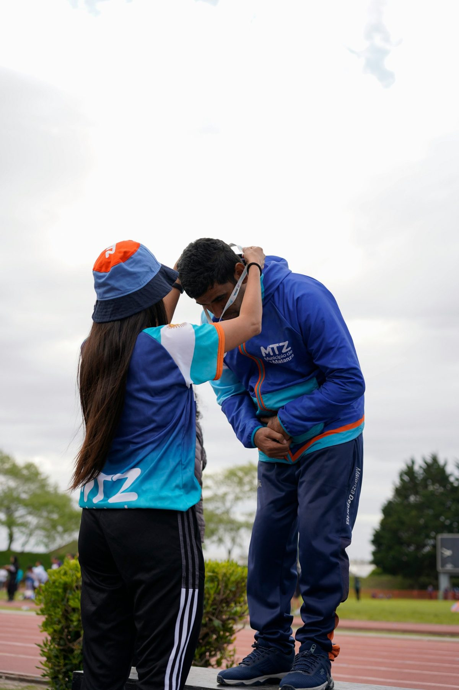

Déroulé
Accueil et retrait des dossards
Stade de l’université. Pensez à votre pièce d’identité.
Échauffement collectif
Animé par les étudiants de la filière sport.
Briefing et placement sur la ligne
Rappel du parcours et des consignes de sécurité.
Départ du 10 km
Le parcours découverte de 5 km part à 10h15.
Arrivée des derniers coureurs
Ravitaillement final et étirements.
Remise des récompenses
Podiums par catégorie, tirage au sort et pot de clôture.

Photo : Thomas Rodriguez, via Unsplash.